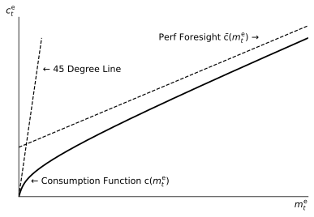
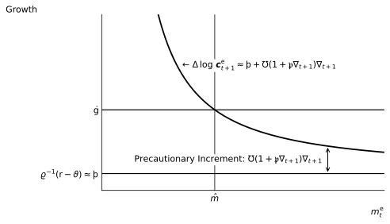
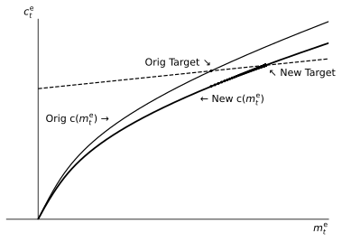

Christopher D. Carroll TractableBufferStock
Christopher D. Carroll TractableBufferStock
Christopher D. Carroll TractableBufferStock
This handout illustrates the logic of precautionary saving by assuming that individuals face only a single, simple kind of uncertainty: A small risk of becoming permanently unemployed. More realistic assumptions yield similar conclusions (after much more work).1
Two assumptions make the model tractable. Unemployment is permanent, so an unemployed consumer has a perfect foresight problem whose solution is linear in resources. And the income of a consumer who stays employed grows just fast enough that a change in the risk of unemployment leaves expected human wealth unchanged, so the change is a pure change in uncertainty.
We show that a consumer who is sufficiently impatient has a target ratio of wealth to income, at which impatience, pulling wealth down, is balanced by prudence, which grows stronger as wealth falls; and that the consumption function is concave. The model then shows why estimates of the consumption Euler equation can mislead and, for a small open economy, how a transfer to each newborn generation (a “stake”) lets a representative agent describe the behavior of many households. The appendix derives the results and describes how the model is solved numerically.
A companion notebook in the Econ-ARK DemARK collection, Tractable Buffer Stock (interactive), lets you vary the model’s parameters and watch the consumption function and target wealth respond. HARK solves the model as its TractableConsumerType. This handout’s figures are drawn by its figure notebook, which solves the model itself; its results have been checked against HARK’s. Run it in your browser, with nothing to install, in JupyterLite, or open it in Colab or Binder.
The aggregate wage grows by a constant factor  every period, reflecting exogenous
labor productivity improvements:
every period, reflecting exogenous
labor productivity improvements:
| (1) |
The consumer lives in a small open economy, so there is a constant interest factor .
Defining  as market resources (net worth plus current income), as end-of-period assets
after all actions are accomplished (specifically, after the consumption decision), and as
bank balances before receipt of labor income, the dynamic budget constraint can be
decomposed into the following elements:
as market resources (net worth plus current income), as end-of-period assets
after all actions are accomplished (specifically, after the consumption decision), and as
bank balances before receipt of labor income, the dynamic budget constraint can be
decomposed into the following elements:
| (2) |
where  measures the consumer’s labor productivity (“endowment”) and
measures the consumer’s labor productivity (“endowment”) and  is a dummy variable indicating the consumer’s employment state: Everyone
is either employed (state “e”), in which case , or unemployed (state
“u”), in which case , so that for unemployed individuals labor income is
zero.2
is a dummy variable indicating the consumer’s employment state: Everyone
is either employed (state “e”), in which case , or unemployed (state
“u”), in which case , so that for unemployed individuals labor income is
zero.2
Once a person becomes unemployed, that person can never become employed
again (i.e. if then ). Consumers have a CRRA felicity
function3
 , and discount future felicity geometrically by
, and discount future felicity geometrically by  per period.
per period.
The solution to the unemployed consumer’s optimization problem is4
| (3) |
where the  superscript signifies the consumer’s (un)employment status;
is the marginal propensity to consume for the perfect foresight consumer,
which is strictly below the MPC for the problem with uncertainty (Carroll and
Kimball, 1996); and is what Carroll (2023) calls the “return patience
factor.”5
superscript signifies the consumer’s (un)employment status;
is the marginal propensity to consume for the perfect foresight consumer,
which is strictly below the MPC for the problem with uncertainty (Carroll and
Kimball, 1996); and is what Carroll (2023) calls the “return patience
factor.”5
We now impose the “return impatience condition” (RIC),
| (4) |
which deserves its name because it is the condition that guarantees that : the consumer must not be so patient that, given the interest rate, a boost to resources fails to boost spending.6 An alternative (equally correct) interpretation is that the condition guarantees that the present discounted value of consumption for the unemployed consumer is not infinity.7
For many purposes (not least, the calibration of the model), it turns out to be useful to
alternatively express impatience conditions like (4) in terms of the upper bound of the range
of time preference factors  that satisfy the condition; solving (4) for , we designate this
object
that satisfy the condition; solving (4) for , we designate this
object
| (5) |
and write the alternative version of the constraint as
| (6) |
 is the “return patience factor” because it defines the patience factor relative
to the return factor ; correspondingly, we define the “return patience rate” as
lower-case
is the “return patience factor” because it defines the patience factor relative
to the return factor ; correspondingly, we define the “return patience rate” as
lower-case
| (7) |
and we say that a consumer is “return impatient” if the RIC (4) holds (equivalent conditions are  and ).8
and ).8
If a person who is employed in period  () is still employed next period (),
market resources will be
() is still employed next period (),
market resources will be
| (8) |
But employed consumers face a constant risk of becoming unemployed. It will be
convenient to define  as the probability that a consumer does not become
unemployed. Whether the consumer is employed or not, their labor productivity
as the probability that a consumer does not become
unemployed. Whether the consumer is employed or not, their labor productivity  is
well-defined:9
For convenience, is assumed to grow by a factor every period,
is
well-defined:9
For convenience, is assumed to grow by a factor every period,
| (9) |
which means that for a consumer who remains employed, labor income will grow by factor
| (10) |
so that the expected labor income growth factor for employed consumers is the same  as in
the perfect foresight case:
as in
the perfect foresight case:
| (11) |
which is the reason for (9)’s assumption about the growth of individual labor productivity: An increase in is a pure increase in uncertainty with no effect on the present discounted value of expected labor income (“human wealth”);10 an increase in therefore constitutes a “mean-preserving spread” in human wealth.
The same solution methods used in PerfForesightCRRA can be applied here too (take the first order condition with respect to , use the Envelope theorem); the only difference is the need to keep the expectations operator in place. Using as a placeholder for “e” or “u,” the usual steps lead to the standard consumption Euler equation:
| (12) |
Defining nonbold variables as the bold equivalent divided by the level of permanent labor income for an employed consumer, e.g. , we can rewrite the consumption Euler equation as
| (13) |
It will be useful now to define a “growth patience factor” (terminology justified below):
| (14) |
which is the factor by which would grow in the perfect foresight version of the model with permanent income growth factor (again see PerfForesightCRRA). Using this, (13) can be written as
| (15) |
(This is where the perfect foresight assumption is important; without it (15) would be
| (16) |
and we would be unable to proceed.)
Now define (which is the proportion by which consumption would be greater next period for an employed than for an unemployed person)11 , and define an “excess prudence” factor
| (17) |
The appendix on approximate consumption growth shows that, with some approximations, we can rewrite (15) as
| (18) |
which can be simplified in the logarithmic utility case (where ) to
| (19) |
Now since consumption if employed is surely greater than consumption if unemployed
 ,
,  is certainly a positive number. But since
is certainly a positive number. But since  is the value that
is the value that  would
exhibit in a perfect foresight model, this equation tells us that uncertainty boosts the growth
of consumption for a consumer who stays employed; in the logarithmic case, that growth is
augmented by an amount proportional to the probability of becoming unemployed
would
exhibit in a perfect foresight model, this equation tells us that uncertainty boosts the growth
of consumption for a consumer who stays employed; in the logarithmic case, that growth is
augmented by an amount proportional to the probability of becoming unemployed  multiplied by the size of the “consumption risk” (the amount by which consumption would fall
if unemployment occurs).
multiplied by the size of the “consumption risk” (the amount by which consumption would fall
if unemployment occurs).
We noted above that for any given  , an increase in uncertainty constitutes a
mean-preserving spread in human wealth; thus the “human wealth effect” of an
increase in would be zero for a consumer without a precautionary motive. In this
small-open-economy model a change in also has no effect on the interest rate , and so
none of the conventional determinants of consumption in the perfect foresight model
(the income, substitution, and human wealth effects) is affected by a change in
uncertainty. Not all of the increase in the growth of
, an increase in uncertainty constitutes a
mean-preserving spread in human wealth; thus the “human wealth effect” of an
increase in would be zero for a consumer without a precautionary motive. In this
small-open-economy model a change in also has no effect on the interest rate , and so
none of the conventional determinants of consumption in the perfect foresight model
(the income, substitution, and human wealth effects) is affected by a change in
uncertainty. Not all of the increase in the growth of  in (18) or (19) is precautionary,
though.
in (18) or (19) is precautionary,
though.  is consumption in the event that the consumer stays employed, which
exceeds expected consumption even for a consumer with no precautionary motive:
with quadratic utility and , consumption is a martingale, , so
is consumption in the event that the consumer stays employed, which
exceeds expected consumption even for a consumer with no precautionary motive:
with quadratic utility and , consumption is a martingale, , so
 . The precautionary motive shows up in
expected consumption growth. Since
. The precautionary motive shows up in
expected consumption growth. Since  , multiplying (18) by
, multiplying (18) by  and
dropping terms of order
and
dropping terms of order  or gives
or gives
| (20) |
Expected consumption grows faster than in the perfect foresight model by an amount
proportional to , the coefficient of relative prudence of CRRA utility, and to  ,
approximately the variance of the proportional change in consumption. Furthermore, because
a profile with faster expected consumption growth can only exhibit the same expected present
discounted value if that faster growth starts from a lower initial consumption level, we know
that for any given initial value of , the introduction of a risk of becoming unemployed
,
approximately the variance of the proportional change in consumption. Furthermore, because
a profile with faster expected consumption growth can only exhibit the same expected present
discounted value if that faster growth starts from a lower initial consumption level, we know
that for any given initial value of , the introduction of a risk of becoming unemployed  induces a (precautionary) decline in consumption (and corresponding increase in
saving).
induces a (precautionary) decline in consumption (and corresponding increase in
saving).
Furthermore, under the (compelling) assumption that  , (18) implies that a consumer
with a higher degree of prudence (larger and therefore larger ) will anticipate a greater
increment to consumption growth as a consequence of the introduction of uncertainty.
This reflects the greater precautionary saving motive induced by a higher degree of
prudence.
, (18) implies that a consumer
with a higher degree of prudence (larger and therefore larger ) will anticipate a greater
increment to consumption growth as a consequence of the introduction of uncertainty.
This reflects the greater precautionary saving motive induced by a higher degree of
prudence.
The target level of  (if one exists) will be the point of intersection between the
(if one exists) will be the point of intersection between the  and
and  loci. Here and below, a variable without a time subscript denotes its value on a
locus along which it does not change from one period to the next; the target itself is marked
with a hat, as in .
loci. Here and below, a variable without a time subscript denotes its value on a
locus along which it does not change from one period to the next; the target itself is marked
with a hat, as in .
The locus can be characterized by substituting :
| (21) |
which boils down to
| (22) |
The importance of the linearity of the consumption function of the unemployed
consumer now becomes evident: It means that the right-hand side of (22) is linear in
 :
:
| (23) |
We know that because a consumer in these circumstances (facing possible perpetual unemployment) will never borrow (see consumption function). Since the RIC imposes , (23) tells us that steady-state consumption (if it exists)12 is a positive finite number so long as . That holds if and only if the numerator on the left-hand side of (21) is a positive finite number, which requires
| (24) |
As with the RIC, it may be useful to rewrite this as defining an upper bound to the time preference factors that satisfy it:
| (25) |
In the limit as  approaches zero, (24) reduces to a requirement that the growth patience
factor is less than one,
approaches zero, (24) reduces to a requirement that the growth patience
factor is less than one,
| (26) |
which, as in PerfForesightCRRA, we call a “growth impatience condition” (GIC) by analogy
to the “return impatience condition” (4) imposed earlier. PerfForesightCRRA shows that the
limit of (24) as ,  , ensures that a consumer facing no uncertainty is sufficiently
impatient that their wealth-to-permanent-income ratio will fall over time. We label the weaker
condition (24) the “GIC-TBS” (the version of the GIC required for the
, ensures that a consumer facing no uncertainty is sufficiently
impatient that their wealth-to-permanent-income ratio will fall over time. We label the weaker
condition (24) the “GIC-TBS” (the version of the GIC required for the  locus to exist
and slope upward in the Tractable Buffer Stock model). It will always hold if the plain-vanilla
locus to exist
and slope upward in the Tractable Buffer Stock model). It will always hold if the plain-vanilla
 holds because . A target level of wealth requires more: the
holds because . A target level of wealth requires more: the  ,
,  ,
which is stronger than the GIC-TBS but weaker than the , because . Thus,
a consumer who, in the absence of uncertainty, would satisfy both the RIC and
the
,
which is stronger than the GIC-TBS but weaker than the , because . Thus,
a consumer who, in the absence of uncertainty, would satisfy both the RIC and
the  , will have a positive finite target level of wealth when uncertainty is
introduced.13
, will have a positive finite target level of wealth when uncertainty is
introduced.13
When it is useful to distinguish the version of the GIC that applies in the model with
income growth of from the corresponding condition when growth is we will
label the two conditions  and
and  , and the corresponding bounds on
, and the corresponding bounds on  are
are
| (27) |
Using  , we similarly define the corresponding “growth patience rate”:
, we similarly define the corresponding “growth patience rate”:
| (28) |
so that the growth impatience condition (24) (the GIC-TBS) can also be written (approximately) as
| (29) |
or, since ,
| (30) |
Equation (30) becomes easier to satisfy (in the sense of requiring a lower  ) as
) as  increases,
since in both places where appears on the left-hand side it is with a negative
coefficient.
increases,
since in both places where appears on the left-hand side it is with a negative
coefficient.
The reason the two appearances of  have not been combined in (30) is that the
separate terms reflect two logically distinct effects. The first appearance, where
have not been combined in (30) is that the
separate terms reflect two logically distinct effects. The first appearance, where
 is premultiplied by
is premultiplied by  , can be interpreted as capturing the sense in
which an increase in is like an increase in the discounting of the future (the
coefficient on is the same as that on ). This downweighting of the future
occurs precisely because that future might not occur (if the consumer becomes
unemployed).14
The effect is much like the increase in discounting that occurs when a positive probability of
death is introduced in consumption problems, cf. Blanchard (1985).
, can be interpreted as capturing the sense in
which an increase in is like an increase in the discounting of the future (the
coefficient on is the same as that on ). This downweighting of the future
occurs precisely because that future might not occur (if the consumer becomes
unemployed).14
The effect is much like the increase in discounting that occurs when a positive probability of
death is introduced in consumption problems, cf. Blanchard (1985).
The second, separate, reason strengthens growth impatience (that is, weakens the GIC:
the GIC-TBS holds in more circumstances than the  ) is that we adjust labor
productivity growth so that in order to maintain constant human wealth for
different values of
) is that we adjust labor
productivity growth so that in order to maintain constant human wealth for
different values of  (eq. (9)). For higher
(eq. (9)). For higher  , permanent income growth is greater
conditional on remaining employed; the continuously-employed consumer is effectively more
“impatient” in the relevant sense of desiring consumption growth slower than income
growth.
, permanent income growth is greater
conditional on remaining employed; the continuously-employed consumer is effectively more
“impatient” in the relevant sense of desiring consumption growth slower than income
growth.
This is essentially a mechanical result, which reflects our model’s design for the purpose of examining thought experiments that manipulate the degree of uncertainty while leaving the perfect-foresight level of human wealth constant.
Note that although is our measure of uncertainty, neither of these effects of
 is in any meaningful sense directly a “precautionary” effect; instead, they both
reflect effects of on the relevant degree of growth impatience in the GIC-TBS
condition.
is in any meaningful sense directly a “precautionary” effect; instead, they both
reflect effects of on the relevant degree of growth impatience in the GIC-TBS
condition.

The appendix on conditions for a target demonstrates that, given the RIC, the  is
necessary and sufficient for the existence of a target value of market resources
is
necessary and sufficient for the existence of a target value of market resources  ; the weaker
GIC-TBS guarantees only that the
; the weaker
GIC-TBS guarantees only that the  locus exists and slopes upward, while
for , the consumption function exists whether or not the GIC-TBS holds.
The appendix on the exact target formula solves for an explicit formula for that
target.
locus exists and slopes upward, while
for , the consumption function exists whether or not the GIC-TBS holds.
The appendix on the exact target formula solves for an explicit formula for that
target.
Briefly, this is accomplished as follows. We can obtain the  locus by substituting
locus by substituting
 into equation (23):
into equation (23):
| (31) |
Now we need to use a normalized version of the dynamic budget constraint (equation (8)),
| (32) |
to derive the  locus (also referred to as the
locus (also referred to as the  locus):
locus):
| (33) |
The steady-state levels of  and
and  are the values of these two variables at which both
(33) and (31) hold. This is just a set of two linear equations and two unknowns, and with a bit
of algebra can be solved explicitly.
are the values of these two variables at which both
(33) and (31) hold. This is just a set of two linear equations and two unknowns, and with a bit
of algebra can be solved explicitly.
Interestingly, the limit of the buffer stock model as is not the perfect foresight solution
obtained when  is exactly equal to zero.
is exactly equal to zero.
PerfForesightCRRA shows that in the perfect foresight context, it is necessary to impose
the Finite Human Wealth Condition (henceforth,  ) to obtain a sensible
solution.15
But if the
) to obtain a sensible
solution.15
But if the  holds, the is strictly stronger than the RIC, because the
combination and obviously implies
holds, the is strictly stronger than the RIC, because the
combination and obviously implies  . If we substitute
. If we substitute  for ,
we can define the corresponding version of the condition in the case where growth is : the
for ,
we can define the corresponding version of the condition in the case where growth is : the
 .
.
It turns out that in the buffer stock model, we can relax the requirement that human wealth is finite.
The GIC-TBS, which is necessary for the existence of a steady-state level of consumption,
reduces to the in the case being considered here, the limit as  . The
interesting question is therefore what happens when the
. The
interesting question is therefore what happens when the  does not hold (that is
).
does not hold (that is
).
Given that the  holds, if the does not hold the RIC may or may not hold:
holds, if the does not hold the RIC may or may not hold:
 implies that
implies that  but
but  could be consistent with
could be consistent with  being
greater or less than one. But recall that our assumption is that the unemployed consumer is
assumed to behave according to the perfect foresight model with human wealth
equal to zero. We must therefore impose the RIC in order to obtain a nondegenerate
solution.
being
greater or less than one. But recall that our assumption is that the unemployed consumer is
assumed to behave according to the perfect foresight model with human wealth
equal to zero. We must therefore impose the RIC in order to obtain a nondegenerate
solution.
For any finite horizon, human wealth is finite, and there is a positive probability that income will be zero over the remainder of the horizon. This puts a strict bound on the extent to which consumers are willing to rely for current consumption upon future income that is unbounded in expectation (as the horizon extends) but potentially bounded in practice. In effect, the precautionary motive introduces a self-imposed borrowing constraint that prevents the (arbitrarily large) amount of future income from being something the consumer is willing to borrow against.
The consequence is that, given the RIC, the limiting model (as ) exhibits, for ,
a solution with a unique finite target  so long as the holds, even if human wealth is
infinite; in this case the
so long as the holds, even if human wealth is
infinite; in this case the  locus is downward sloping (because
locus is downward sloping (because  means
means
 , so its slope in the locus’s equation is negative) while the locus is
upward sloping (as guaranteed by the GIC-TBS, which the
, so its slope in the locus’s equation is negative) while the locus is
upward sloping (as guaranteed by the GIC-TBS, which the  implies). Thus, a target
implies). Thus, a target
 will exist. (The
will exist. (The  holds automatically here:
holds automatically here:  and the RIC give
and the RIC give
 .)
.)
The conditions used in this handout, and what each guarantees, are summarized
below. They nest: the  implies the
implies the  , which implies the GIC-TBS.
, which implies the GIC-TBS.
![-Condition-Inequality--------Bound-on β-------In rates (approximately)-Guarantees-------
RIC Þ < 1 β < Rϱ−1 ϱ−1(r− 𝜗) < r κ > 0: the
R unemployed
consumer’s problem
has a solution
FHWCG G < R g < r human wealth h is
finite, so the perfect
foresighte ¯c exists
FHWC G˚ ˚G < R ˚g < r the Δm = 0 locus
slopes upward
GICG Þ < G β < G ϱ∕R ϱ−1(r− 𝜗) < g a perfect foresight
consumer’s wealth
ratio falls
GIC˚G Þ ˚G < 1 β < ˚G ϱ∕R ϱ−1(r− 𝜗) < ˚g with the RIC, a
target ˆme exists
(necessary and
sufficient)
GIC-TBS Þ (1− ℧)1∕ϱ < 1 β < ˚G ϱ∕(R (1 − ℧)) ϱ−1(r− 𝜗− ℧ ) < g+ ℧ Π > 0: the Δce = 0
˚G locus exists and,
with the RIC, slopes
upward](TractableBufferStock215x.svg)
In the special case of logarithmic utility (), the approximation appendix shows that (under some strong assumptions) an approximation to target market resources will be given by
| (34) |
and that the RIC and the  guarantee that the denominator of the fraction is a positive
number.
guarantee that the denominator of the fraction is a positive
number.
This expression encapsulates several of the key intuitions of the model. The “human wealth
effect” of growth, which Summers (1981) emphasized, is captured by the first  term in the
denominator; clearly, for any calibration for which the denominator is a positive number,
increasing
term in the
denominator; clearly, for any calibration for which the denominator is a positive number,
increasing  will increase the size of the denominator and therefore reduce the target level of
wealth. The human wealth effect of interest rates is correspondingly captured by the
will increase the size of the denominator and therefore reduce the target level of
wealth. The human wealth effect of interest rates is correspondingly captured by the  term. An increase in the future discounting rate, , will also increase the size of
the denominator and therefore reduce target wealth. Finally, holding
term. An increase in the future discounting rate, , will also increase the size of
the denominator and therefore reduce target wealth. Finally, holding  fixed, a
reduction in unemployment risk will boost
fixed, a
reduction in unemployment risk will boost  and therefore reduce target
wealth.16
Under the model’s design, though,
and therefore reduce target
wealth.16
Under the model’s design, though,  moves with to keep human wealth fixed;
substituting it, the derivative of the denominator with respect to is
moves with to keep human wealth fixed;
substituting it, the derivative of the denominator with respect to is  ,
so a reduction in unemployment risk reduces target wealth only if
,
so a reduction in unemployment risk reduces target wealth only if  , as it
does at the benchmark values of these parameters.
, as it
does at the benchmark values of these parameters.
The assumption of log utility is restrictive, and probably does not capture sufficient aversion
to consumption fluctuations. Fortunately, another special case helps to illuminate
the effect of higher levels of prudence. The approximation appendix shows that,
in the special case where  , the target level of wealth will be approximable
by
, the target level of wealth will be approximable
by
| (35) |
which is like (34) (with  ) but with the addition of the final term involving
) but with the addition of the final term involving  which
measures the amount by which prudence exceeds the logarithmic benchmark. An increase in
reduces the denominator of (35) and thereby boosts the target level of wealth:
Exactly what would be expected from an increase in the intensity of the precautionary
motive.
which
measures the amount by which prudence exceeds the logarithmic benchmark. An increase in
reduces the denominator of (35) and thereby boosts the target level of wealth:
Exactly what would be expected from an increase in the intensity of the precautionary
motive.
Note that the different effects interact with each other, in the sense that the strength of, say, the human wealth effect will vary depending on the values of the other parameters. The ways in which these interactions make intuitive sense will repay deep reflection. (Hint: how much a consumer cares about the future governs the power that future events have in determining the target; use the formula to think about why.)
The figures use a benchmark calibration chosen to show the model’s features clearly
rather than for realism: , (so ),  ,
,  and
and  (and, for the small open economy,
(and, for the small open economy,  ). It implies ,
so
). It implies ,
so  ; , so the
; , so the  holds; and a target , with
holds; and a target , with
 .
.
Figure 1 presents the phase diagram.

The locus, given in (33), indicates, for a given level of , how much
consumption would be exactly the right amount to leave  unchanged. Call
this the “permanently sustainable consumption locus,” or for short “sustainable
consumption.”17
For any given
unchanged. Call
this the “permanently sustainable consumption locus,” or for short “sustainable
consumption.”17
For any given  , consuming an amount less than the “sustainable” level will cause wealth to
rise (and conversely for points above
, consuming an amount less than the “sustainable” level will cause wealth to
rise (and conversely for points above  ). This provides the logic for the horizontal
arrows of motion in the diagram: Above the sustainable consumption locus they point left,
and below they point right.
). This provides the logic for the horizontal
arrows of motion in the diagram: Above the sustainable consumption locus they point left,
and below they point right.
The intuition for the  locus (which comes from (31)) is a bit subtler, because it
reflects preferences: it comes from the Euler equation, not from the budget constraint, which
gives the locus. Take a point on the
locus (which comes from (31)) is a bit subtler, because it
reflects preferences: it comes from the Euler equation, not from the budget constraint, which
gives the locus. Take a point on the  locus, and consider how things would
change if were a bit higher at the same . Recall that the growth rate of consumption
consistent with the Euler equation (12) depends on the amount by which consumption will fall
if the bad state is realized, . But so
at the same
locus, and consider how things would
change if were a bit higher at the same . Recall that the growth rate of consumption
consistent with the Euler equation (12) depends on the amount by which consumption will fall
if the bad state is realized, . But so
at the same  but a greater ,
but a greater ,  will be larger. If were to remain
unchanged, then with the larger
will be larger. If were to remain
unchanged, then with the larger  the ratio would be
smaller.
the ratio would be
smaller.
The consequences of this are easiest to see in the logarithmic case whose consumption
growth equation is derived in (19), which tells us that  , which
directly implies that the lower
, which
directly implies that the lower  will yield a lower
will yield a lower  . That is, for any point to the
right of the
. That is, for any point to the
right of the  locus, the growth rate of consumption will be lower than at the
corresponding point on the locus. Since on the locus, growth was zero, this means that to the
right of the locus,
locus, the growth rate of consumption will be lower than at the
corresponding point on the locus. Since on the locus, growth was zero, this means that to the
right of the locus,  is declining (hence the down arrow in the phase diagram). Reciprocally,
for any point to the left of
is declining (hence the down arrow in the phase diagram). Reciprocally,
for any point to the left of  , the Euler equation implies that consumption will
rise.
, the Euler equation implies that consumption will
rise.
 grows. Drawn by the handout’s notebook;
run it in your browser, with nothing to install, in JupyterLite, or open it
in Colab or Binder.
grows. Drawn by the handout’s notebook;
run it in your browser, with nothing to install, in JupyterLite, or open it
in Colab or Binder.

Figure 2 shows the optimal consumption function for an employed consumer (dropping
the  superscript to reduce clutter). This is actually just the stable arm in the phase
diagram. (Think about why). Also plotted are the 45 degree line along which
superscript to reduce clutter). This is actually just the stable arm in the phase
diagram. (Think about why). Also plotted are the 45 degree line along which  as well
as the function
as well
as the function
| (36) |
where
| (37) |
is the level of (normalized) human wealth.  is the solution to a perfect foresight
problem in which income grows by the factor
is the solution to a perfect foresight
problem in which income grows by the factor  ; it is depicted in order to
introduce a final fact: As wealth approaches infinity, the solution to the problem
with uncertain labor income approaches arbitrarily close to the perfect foresight
solution, as the appendix on the consumption function as wealth grows large
shows.18
; it is depicted in order to
introduce a final fact: As wealth approaches infinity, the solution to the problem
with uncertain labor income approaches arbitrarily close to the perfect foresight
solution, as the appendix on the consumption function as wealth grows large
shows.18
Note that  is concave.19
That is, the marginal propensity to consume
is concave.19
That is, the marginal propensity to consume  is higher at low levels of
is higher at low levels of
 . This is because of the increase in the intensity of the precautionary motive as resources
. This is because of the increase in the intensity of the precautionary motive as resources
 decline; the consequences of becoming unemployed with little wealth are very painful. The
MPC is high at low levels of because at low levels of the relaxation in the intensity of
the precautionary motive with each extra bit of is quite large (Kimball, 1990). This
diminution in the precautionary motive translates into an increase in consumption; for
-poor consumers even a modest increase in
decline; the consequences of becoming unemployed with little wealth are very painful. The
MPC is high at low levels of because at low levels of the relaxation in the intensity of
the precautionary motive with each extra bit of is quite large (Kimball, 1990). This
diminution in the precautionary motive translates into an increase in consumption; for
-poor consumers even a modest increase in  can give a substantial boost to
can give a substantial boost to
 .
.
This point is clearest as approaches zero. Note that the consumption function always
remains below the 45 degree line. This is because if the consumer were to spend all of
their resources in period ,  , then on becoming unemployed next period
they would have which would induce
, then on becoming unemployed next period
they would have which would induce  ,
yielding negative infinite utility. Thus the consumer will never spend all of their
resources, and will always leave at least a little bit for next period in case of disaster
(unemployment).20
,
yielding negative infinite utility. Thus the consumer will never spend all of their
resources, and will always leave at least a little bit for next period in case of disaster
(unemployment).20
Figure 3 (“the growth diagram”) illustrates some of the same points in a different way. It
depicts the growth rate of consumption as a function of . Since  , the
, the  implies:
implies:
| (38) |
a condition that can be visually verified for our benchmark calibration in Figure 3. Now multiply both sides of (15) by , obtaining
| (39) |
where the last line uses the same (dubious) approximations used to obtain (18).21
Thus consumption growth is equal to what it would be in the absence of uncertainty, plus a
precautionary term. Furthermore, the precautionary contribution will become arbitrarily large
as  because
because  approaches zero as
approaches zero as  . Sure
enough, Figure 3 shows that as
. Sure
enough, Figure 3 shows that as  gets low, the growth of consumption for a consumer who
stays employed gets very large.
gets low, the growth of consumption for a consumer who
stays employed gets very large.
 rises and equals income growth
rises and equals income growth
 at the target; its excess over the perfect foresight rate is the
precautionary increment. Drawn by the handout’s notebook; run it in
your browser, with nothing to install, in JupyterLite, or open it in Colab
or Binder.
at the target; its excess over the perfect foresight rate is the
precautionary increment. Drawn by the handout’s notebook; run it in
your browser, with nothing to install, in JupyterLite, or open it in Colab
or Binder.

Next, note that the point where the consumption growth locus meets the income growth
line is labeled . This is because the place where consumption growth is equal to income
growth is at the target value of  .
.
We are finally in position to get an intuitive understanding of how the model works, and why there is a target wealth ratio. On the one hand, consumers are growth-impatient. This prevents their wealth-to-income ratio from heading off to infinity. On the other hand, consumers have a precautionary motive that intensifies more and more as the level of wealth gets lower and lower. At some point the precautionary motive gets strong enough to counterbalance impatience. The point where impatience matches prudence defines the target wealth-to-income ratio.

Now consider the results of increasing the interest rate to , depicted in Figure 4.
Obviously the perfect foresight consumption growth locus will shift up, to ,
inducing a corresponding increase in the consumption growth locus for a consumer who stays
employed. But we have not changed the expected growth rate of income. It is clear from the
figure, therefore, that the new target level of cash-on-hand  will be greater than the
original target. That is, an increase in the interest rate increases the target level of wealth, as
would be expected on intuitive grounds: in the benchmark calibration, raising by 0.04 raises
will be greater than the
original target. That is, an increase in the interest rate increases the target level of wealth, as
would be expected on intuitive grounds: in the benchmark calibration, raising by 0.04 raises
 from 5.48 to 6.89.
from 5.48 to 6.89.
The next exercise, shown in Figure 5, is an increase in the risk of unemployment  . The
principal effect we are interested in is the upward shift in the consumption growth locus (for a
consumer who stays employed) to
. The
principal effect we are interested in is the upward shift in the consumption growth locus (for a
consumer who stays employed) to  . If the household starts at the original target level
of resources
. If the household starts at the original target level
of resources  , the size of the upward shift at that point is captured by the arrow originating
at .
, the size of the upward shift at that point is captured by the arrow originating
at .
In the absence of other consequences of the rise in , the effect on the target level of  would be unambiguously positive. However, recall our adjustment to the growth rate
conditional upon employment, (9); this induces the shift in the income growth locus to
which has an offsetting effect on the target ratio. Under our benchmark parameter values,
the target value of is higher than before the increase in risk even after accounting for the
effect of higher
would be unambiguously positive. However, recall our adjustment to the growth rate
conditional upon employment, (9); this induces the shift in the income growth locus to
which has an offsetting effect on the target ratio. Under our benchmark parameter values,
the target value of is higher than before the increase in risk even after accounting for the
effect of higher  (tripling
(tripling  raises from 5.48 to 7.50), but in principle it is
possible for the effect to dominate the direct effect. Note, however, that even if the
target value of is lower, it is possible that the saving rate will be higher; this is
possible because the faster rate of makes a given saving rate translate into a lower
ratio of wealth to income. In any case, the most useful calibrations of the model are
those for which an increase in uncertainty results in either an increase in the saving
rate or an increase in the target ratio of resources to permanent income. This is
partly because our intent is to use the model to illustrate the general features of
precautionary behavior, including the qualitative effects of an increase in the magnitude of
transitory shocks, which a prudent consumer meets with more precautionary saving
(Kimball, 1990).
raises from 5.48 to 7.50), but in principle it is
possible for the effect to dominate the direct effect. Note, however, that even if the
target value of is lower, it is possible that the saving rate will be higher; this is
possible because the faster rate of makes a given saving rate translate into a lower
ratio of wealth to income. In any case, the most useful calibrations of the model are
those for which an increase in uncertainty results in either an increase in the saving
rate or an increase in the target ratio of resources to permanent income. This is
partly because our intent is to use the model to illustrate the general features of
precautionary behavior, including the qualitative effects of an increase in the magnitude of
transitory shocks, which a prudent consumer meets with more precautionary saving
(Kimball, 1990).
 for consumers
who stay employed; at the benchmark calibration the target rises. Drawn
by the handout’s notebook; run it in your browser, with nothing to
install, in JupyterLite, or open it in Colab or Binder.
for consumers
who stay employed; at the benchmark calibration the target rises. Drawn
by the handout’s notebook; run it in your browser, with nothing to
install, in JupyterLite, or open it in Colab or Binder.

Figure 3 and Figure 4 show that, so long as consumers are impatient, the steady state growth rate of consumption will be equal to the steady-state growth rate of income,
| (40) |
Yet the approximate Euler equation for consumption growth, (39), does not contain any term explicitly involving income growth; in the logarithmic utility case, for example, the expression is
| (41) |
How can we reconcile these two expressions for consumption growth? Only by
realizing that the size of the precautionary term  is endogenous: It depends on
. Indeed, we can solve (40) and (41) to determine that in steady-state we must
have
is endogenous: It depends on
. Indeed, we can solve (40) and (41) to determine that in steady-state we must
have
| (42) |
We can use this equation to understand the relationship between parameters and
steady-state levels of wealth, by noting that is a downward-sloping function of
(see Figure 3 again). This is because at low levels of current wealth, much of the spending of
employed consumers is financed by their current income. If they lose that income, they will
have no choice but to cut consumption drastically; this is reflected in a large value of
 .
.
For example, an increase in the growth rate of income implies that the right-hand side of
equation (42) increases. The new target level of  must be lower, because lower wealth
induces greater consumption risk and a corresponding increase in the left-hand side of (42).
This is how the human wealth effect works in this framework: Consumers who anticipate faster
income growth will hold less market wealth.
must be lower, because lower wealth
induces greater consumption risk and a corresponding increase in the left-hand side of (42).
This is how the human wealth effect works in this framework: Consumers who anticipate faster
income growth will hold less market wealth.
The fact that consumption growth equals income growth in the steady-state poses major
problems for empirical attempts to estimate the Euler equation. To see why, suppose we had a
collection of countries indexed by , identical in all respects except that they have different
interest rates  . Then in the spirit of Hall (1988), one might be tempted to estimate an
equation:
. Then in the spirit of Hall (1988), one might be tempted to estimate an
equation:
| (43) |
and to interpret the coefficient estimate on as an indication of the value of  .
.
But suppose that all of these countries contained impatient consumers and were in their steady-states where . Suppose further that all countries had the same steady-state income growth rate and unemployment rate.22 Then the regression equation would return the estimates
| (44) |
The econometric problem here is that there is an omitted variable from the regression
specification, the  term, which is (perfectly) correlated with the included variable
. Thus, Euler equation estimation cannot be expected to return an unbiased
estimate of
term, which is (perfectly) correlated with the included variable
. Thus, Euler equation estimation cannot be expected to return an unbiased
estimate of  . For much more on this problem, see Carroll (2001). For empirical
evidence that the problem is important in macroeconomic practice, see Parker and
Preston (2005).
. For much more on this problem, see Carroll (2001). For empirical
evidence that the problem is important in macroeconomic practice, see Parker and
Preston (2005).
We now consider a final experiment: A decrease in the time preference rate. To reduce clutter,
we drop the  locus from the phase diagram from Figure 1, and everywhere drop
the superscripts.
locus from the phase diagram from Figure 1, and everywhere drop
the superscripts.
Figure 6 depicts the effect on the employed consumer’s spending by showing each successive point in time as a dot. Starting at time 0 from the steady-state level of consumption, the decrease in the future discounting rate (an increase in patience) causes an instantaneous drop in the level of consumption. Starting from this diminished base, consumption growth is subsequently faster than before the drop in .23
Eventually consumption approaches its new, higher equilibrium ratio to permanent income
at a new, higher level of equilibrium  (in the benchmark calibration, lowering from
0.10 to 0.08 raises from 5.48 to 7.19 and from 1.11 to 1.15). This higher level of
consumption is financed in the long run by the higher interest income earned on the higher
level of wealth.
(in the benchmark calibration, lowering from
0.10 to 0.08 raises from 5.48 to 7.19 and from 1.11 to 1.15). This higher level of
consumption is financed in the long run by the higher interest income earned on the higher
level of wealth.
Note again, however, that equilibrium steady-state consumption growth is still equal to the
growth rate of income (this follows from the fact that there is a steady-state level for the ratio
of consumption to income,  ). This means that the higher level of wealth in equilibrium ends
up being precisely enough to reduce the precautionary term by an amount that exactly offsets
the fact that the
). This means that the higher level of wealth in equilibrium ends
up being precisely enough to reduce the precautionary term by an amount that exactly offsets
the fact that the  term in the Euler equation is now smaller in absolute
value.
term in the Euler equation is now smaller in absolute
value.
Figure 7, Figure 8 and Figure 9 depict the time paths of consumption, market wealth, and
the marginal propensity to consume  following the decline in
following the decline in  . These are implicit in
the phase diagram analysis, but the dots in these three diagrams are spread out evenly over
time to give a sense of the time scale over which the model adjusts toward the steady
state.
. These are implicit in
the phase diagram analysis, but the dots in these three diagrams are spread out evenly over
time to give a sense of the time scale over which the model adjusts toward the steady
state.
 On Consumption Function. The new consumption
function lies below the original; from the original target, consumption
drops, and the consumer then moves along the new function to the higher
new target. Drawn by the handout’s notebook; run it in your browser,
with nothing to install, in JupyterLite, or open it in Colab or Binder.
On Consumption Function. The new consumption
function lies below the original; from the original target, consumption
drops, and the consumer then moves along the new function to the higher
new target. Drawn by the handout’s notebook; run it in your browser,
with nothing to install, in JupyterLite, or open it in Colab or Binder.

 Before and After
Before and After  Decline. Consumption drops when
falls, then rises to a higher steady-state ratio. Drawn by the handout’s
notebook; run it in your browser, with nothing to install, in JupyterLite,
or open it in Colab or Binder.
Decline. Consumption drops when
falls, then rises to a higher steady-state ratio. Drawn by the handout’s
notebook; run it in your browser, with nothing to install, in JupyterLite,
or open it in Colab or Binder.

 Before and After Decline. Market resources rise gradually
to the higher new target. Drawn by the handout’s notebook; run it in
your browser, with nothing to install, in JupyterLite, or open it in Colab
or Binder.
Before and After Decline. Market resources rise gradually
to the higher new target. Drawn by the handout’s notebook; run it in
your browser, with nothing to install, in JupyterLite, or open it in Colab
or Binder.

 falls and keeps falling as wealth accumulates,
staying above the perfect foresight MPC
falls and keeps falling as wealth accumulates,
staying above the perfect foresight MPC  . Drawn by the handout’s
notebook; run it in your browser, with nothing to install, in JupyterLite,
or open it in Colab or Binder.
. Drawn by the handout’s
notebook; run it in your browser, with nothing to install, in JupyterLite,
or open it in Colab or Binder.

Loosely following Carroll and Jeanne (2009) (with some simplifications), this section extends
the model to analyze macroeconomic dynamics in a small open economy with a large number
of individuals, where the population statistics reflect the fulfillment of individual consumers’
ex ante expectations; for example, exactly proportion  of households who are
employed in period
of households who are
employed in period  become “unemployed” before
become “unemployed” before  , so that the aggregate labor
supply of the “active” (still employed) members of a generation evolves according
to
, so that the aggregate labor
supply of the “active” (still employed) members of a generation evolves according
to
| (45) |
where the first subscript denotes the date being examined and the second denotes the period of birth of the generation being examined.
We make strong assumptions that permit straightforward aggregation. The first such assumption is that newly unemployed households immediately migrate out of the country (think of British retirees moving to southern Spain).24 This means that macroeconomic variables will reflect only the circumstances of employed consumers, rather than a blend of the employed and the unemployed.
Each person is part of a single “generation” of households born at the same time, and every new generation is larger by the factor than the newborn generation in the previous period:
| (46) |
We assume that total production by the (surviving) members of a generation grows by the
factor  every period. If total production is to grow despite a shrinking number of surviving
members of the generation, production per active capita must grow by as per
(9).
every period. If total production is to grow despite a shrinking number of surviving
members of the generation, production per active capita must grow by as per
(9).
Consider the economy in some period 0 in which the size of the newborn population and the
wage rate have been normalized to  , and index each generation by its age
, and index each generation by its age  ,
the number of periods since its birth. If the economy was created periods before period 0,
so that its oldest generation has age , the ratio of the total population to the population of
newborns will be
,
the number of periods since its birth. If the economy was created periods before period 0,
so that its oldest generation has age , the ratio of the total population to the population of
newborns will be
| (47) |
whose limit as  is a finite number so long as , which we require.
is a finite number so long as , which we require.
Relative to the labor income of period 0’s newborn cohort (), the total labor
income in period 0 of the generation born in period  is
is  ; the sum of the incomes of
all of the two-period-old individuals is , and so on; total labor income for all generations
in the economy in period 0 is
; the sum of the incomes of
all of the two-period-old individuals is , and so on; total labor income for all generations
in the economy in period 0 is
| (48) |
which is finite so long as either population growth is positive  (which we will assume)
or the economy has existed for a finite period of time (). In either case, the
proportion of aggregate income accounted for by a generation born at any specific
moment declines toward zero as time passes (old generations never die, they just fade
away).
(which we will assume)
or the economy has existed for a finite period of time (). In either case, the
proportion of aggregate income accounted for by a generation born at any specific
moment declines toward zero as time passes (old generations never die, they just fade
away).
In the balanced growth equilibrium, the growth factor for aggregate population will
therefore be  and output per capita will increase by
and output per capita will increase by  per period. Total labor income
therefore grows by
per period. Total labor income
therefore grows by 
We now examine this model under two assumptions about the initial “stake” of newborns in the economy. (We use “stake” to designate a transfer received by newborns). This is explicitly not an inheritance, as we have assumed that individuals have no bequest motive and newborns are unrelated to anyone in the existing population. Our motivation is to make the model more tractable, rather than to represent an important feature of the real world; the model without a “stake” can only be solved by simulation, and Figure 11 shows how its aggregate consumption evolves when households start with no wealth.
We first consider a version of the model in which an exogenous redistribution program guarantees that the behavior of employed households can be understood by analyzing the actions of a “representative employed agent.”
If a benevolent source outside the economy were to provide every newborn with an initial
transfer upon birth of size  , then the newborn’s total monetary resources would
be
, then the newborn’s total monetary resources would
be
| (49) |
Thus, per-capita market resources for members of the newborn generation would be exactly equal to the target level of market resources for a person anticipating the future path of labor income that the members of the newborn generation actually anticipate (which is the same as the future path anticipated by all other generations as well).
If such a transfer policy had been in place forever, the economy at every point in time would
consist of employed households whose consumption had been equal to its steady-state value
 for their whole lives. That is, every individual agent in this economy would be identical in
their ratio of consumption, market resources, etc. to permanent labor income. The behavior of
any individual would therefore be fully captured by the behavior of a representative employed
agent.25
for their whole lives. That is, every individual agent in this economy would be identical in
their ratio of consumption, market resources, etc. to permanent labor income. The behavior of
any individual would therefore be fully captured by the behavior of a representative employed
agent.25
The foregoing scenario assumed that the “stake” is provided by a mysterious “benevolent source outside the economy.” Fortunately, there is an easy way to eliminate this problematic assumption: Assume that the stakes are financed by a wage tax.
The size of the required tax rate is calculated as follows. The total size of the resources transferred to the newborn generation must be
| (50) |
where
| (51) |
is the after-tax wage rate for the economy as a whole (and  is the steady state target ratio
of bank balances to after-tax wages).
is the steady state target ratio
of bank balances to after-tax wages).
From (48), the ratio of total aggregate labor income to the labor income of the newborn generation is
| (52) |
so, since the stake is times the after-tax wage, the aggregate wage tax rate required to
finance a “stake” of size  for newborns is given by
for newborns is given by
| (53) |
Note, however, that in an economy where this tax has existed forever, the consequence of
the tax is effectively just a permanent reduction in after-tax labor income by proportion
, compared to its value in the absence of the tax. Given the homotheticity of
the model, a permanent rescaling by a constant factor leaves the scaled version of
the individual’s problem (and its solution) unchanged. Thus we can conclude not
only that a representative agent exists in this economy, but that the steady-state
characteristics of the representative agent’s problem are identical (in ratio form) to the
characteristics of the unrescaled individual’s problem; that is,  ,
,  , and so
on.
, and so
on.
Matters are not much more complicated outside the balanced growth steady state, so long
as we assume that the government always transfers the amount to newborn households,
financed by the tax derived above. Consider, for example, an economy that was in
steady-state equilibrium leading up to period  , and at the beginning of
, and at the beginning of  there is a sudden
realization that future growth rates will be higher than those anticipated and experienced in
the past:
there is a sudden
realization that future growth rates will be higher than those anticipated and experienced in
the past:  after
after  . Since expected growth rates affect
. Since expected growth rates affect  , the tax rate must be
immediately and permanently changed so that the generations born after receive a
“stake” of the proper new size. This change in has two consequences for the generations
that survive from periods prior to
, the tax rate must be
immediately and permanently changed so that the generations born after receive a
“stake” of the proper new size. This change in has two consequences for the generations
that survive from periods prior to  . Under the old tax rate, they would have experienced
. Under the old tax rate, they would have experienced
 ; the change in expectations has no effect on or but
changes the tax rate to . Thus these households will have an actual resource ratio
that differs from its new target value, , both because the after-tax income
scaling factor has changed and because the target ratio has changed from
; the change in expectations has no effect on or but
changes the tax rate to . Thus these households will have an actual resource ratio
that differs from its new target value, , both because the after-tax income
scaling factor has changed and because the target ratio has changed from  to
to
 .
.
However, if we started out in steady-state, the ratio problem of every member of the continuing-employed population is identical to that of every other such household (though, again, their masses differ depending on age, etc); as a result, the dynamics of the economy are fully captured by keeping track of the relative weights in the economy of the (gradually diminishing) “representative shocked agent” and the (gradually increasing) “representative new agent” whose behavior is locked at its steady-state value.26
Figure 10 illustrates the dynamics in this economy using an experiment identical to one explored above for the individual’s problem: In period 0 there is a one-off decline in the future discounting rate (assuming the economy was in steady state before period 0). In the previous model, each individual consumer’s consumption function shifted down, and consumption experienced a discrete jump downward, because the agent became more patient. Here, there is a modest further effect: With more-patient consumers, the tax rate that the government sets to finance a transfer of to the newborns must be larger (so that the ratio of initial assets to after-tax income is larger). Qualitatively, the dynamics are indistinguishable from the individual consumer’s dynamics obtainable without working through the extra complication involved in accounting for the “stakes.”
 in a Small Open Economy Before and After Decline.
With stakes, aggregate consumption behaves like an individual’s: it
drops, then rises to a higher ratio. Drawn by the handout’s notebook;
run it in your browser, with nothing to install, in JupyterLite, or open it
in Colab or Binder.
in a Small Open Economy Before and After Decline.
With stakes, aggregate consumption behaves like an individual’s: it
drops, then rises to a higher ratio. Drawn by the handout’s notebook;
run it in your browser, with nothing to install, in JupyterLite, or open it
in Colab or Binder.

The polar alternative to assuming that newborns get a “stake” is to assume that newborns enter the economy with zero assets. Analysis of this version of the model must be performed using simulation methods, because households of different ages will have different levels of assets. (Because the consumption function is concave and has no closed form, aggregation cannot be done analytically.)
Our simulation procedure assumes that at date 0 the economy has existed forever (so that the age distribution of relative populations and productivities are at their steady-state values), but saving has been impossible prior to period 0.27 With everyone’s , the ratio of market resources to permanent labor income is the same for all individuals, whatever their age :
| (54) |
The consumption ratio in period 0 is therefore  for every household (regardless of
age), while the level of per-capita labor income for a generation of age
for every household (regardless of
age), while the level of per-capita labor income for a generation of age  is
is
 .28
The population of such workers is
.28
The population of such workers is  , so aggregate consumption will be given by the
per-capita consumption ratio, multiplied by the per-capita level of permanent income,
multiplied by the population of workers still alive:
, so aggregate consumption will be given by the
per-capita consumption ratio, multiplied by the per-capita level of permanent income,
multiplied by the population of workers still alive:
| (55) |
The longer a generation lives, the more time it will have had to save toward its target level of wealth; but newborns always begin life with no assets. After period 0, therefore, age-heterogeneity in assets and consumption ratios creeps into the population.
The foregoing discussion contains (in some cases implicitly) all the assumptions necessary to conduct a simulation of this economy. Figure 11 shows the path of , aggregate consumption as a ratio to aggregate labor income, starting from period 0 for an economy under our benchmark parameterization that generated our earlier figures. The only extra parameter required beyond those used before is ; we choose corresponding roughly to the postwar population growth rate in the United States.
 in a Small Open Economy Without Stakes From
Date 0. Starting with no wealth, aggregate consumption rises quickly
toward its steady-state ratio as households build their buffer stocks.
Drawn by the handout’s notebook; run it in your browser, with nothing
to install, in JupyterLite, or open it in Colab or Binder.
in a Small Open Economy Without Stakes From
Date 0. Starting with no wealth, aggregate consumption rises quickly
toward its steady-state ratio as households build their buffer stocks.
Drawn by the handout’s notebook; run it in your browser, with nothing
to install, in JupyterLite, or open it in Colab or Binder.

The appendix derives nine further results, which are stated here without their derivations. The notebook uses those on the MPC to solve the model.
 , the
approximation this handout uses, where .
, the
approximation this handout uses, where .
 , that is, . When the
, that is, . When the
 fails (
fails ( ), the RIC implies the
), the RIC implies the  , so a target always exists.
, so a target always exists.
 locus exists, and slopes upward, if and only if the GIC-TBS,
locus exists, and slopes upward, if and only if the GIC-TBS,  ,
holds, while for , the employed consumer’s consumption function exists
whether or not the GIC-TBS holds. The GIC-TBS can hold even when the perfect
foresight
,
holds, while for , the employed consumer’s consumption function exists
whether or not the GIC-TBS holds. The GIC-TBS can hold even when the perfect
foresight  fails. When the GIC-TBS holds but the
fails. When the GIC-TBS holds but the  fails, there is no
target, and the ratio of wealth to income grows forever.
fails, there is no
target, and the ratio of wealth to income grows forever.
 make positive. As the unemployment risk vanishes, the
target approaches 1 if the perfect foresight holds, and a finite value above
1 if .
make positive. As the unemployment risk vanishes, the
target approaches 1 if the perfect foresight holds, and a finite value above
1 if .
 under
logarithmic utility. Under logarithmic utility they are close; otherwise they are
reliable only when the consumer is barely growth-impatient relative to the
unemployment risk: rough when
under
logarithmic utility. Under logarithmic utility they are close; otherwise they are
reliable only when the consumer is barely growth-impatient relative to the
unemployment risk: rough when  , and useless at the benchmark calibration.
, and useless at the benchmark calibration.
 , which lies between the perfect foresight
and 1.
, which lies between the perfect foresight
and 1.
 imply when .
imply when .
 as grows, even when the
as grows, even when the  fails. When
fails. When  , it
approaches
, it
approaches  only in ratio.
only in ratio.
Blanchard, Olivier J. (1985): “Debt, Deficits, and Finite Horizons,” Journal of Political Economy, 93(2), 223–247.
Carroll, Christopher D. (1992): “The Buffer-Stock Theory of Saving: Some Macroeconomic Evidence,” Brookings Papers on Economic Activity, 1992(2), 61–156, https://www.econ2.jhu.edu/people/ccarroll/BufferStockBPEA.pdf.
__________ (2001): “Death to the Log-Linearized Consumption Euler Equation! (And Very Poor Health to the Second-Order Approximation),” Advances in Macroeconomics, 1(1), Article 6, https://www.econ2.jhu.edu/people/ccarroll/death.pdf.
__________ (2023): “Theoretical Foundations of Buffer Stock Saving,” Revise and Resubmit, Quantitative Economics.
Carroll, Christopher D., and Olivier Jeanne (2009): “A Tractable Model of Precautionary Reserves, Net Foreign Assets, or Sovereign Wealth Funds,” NBER Working Paper Number 15228, https://www.econ2.jhu.edu/people/ccarroll/papers/cjSOE.
Carroll, Christopher D., and Miles S. Kimball (1996): “On the Concavity of the Consumption Function,” Econometrica, 64(4), 981–992, https://www.econ2.jhu.edu/people/ccarroll/concavity.pdf.
__________ (2007): “Precautionary Saving and Precautionary Wealth,” Palgrave Dictionary of Economics and Finance, 2nd Ed., https://www.econ2.jhu.edu/people/ccarroll/papers/PalgravePrecautionary.pdf.
Friedman, Milton A. (1957): A Theory of the Consumption Function. Princeton University Press.
Hall, Robert E. (1988): “Intertemporal Substitution in Consumption,” Journal of Political Economy, XCVI, 339–357, Available at http://www.stanford.edu/~rehall/Intertemporal-JPE-April-1988.pdf.
Kimball, Miles S. (1990): “Precautionary Saving in the Small and in the Large,” Econometrica, 58, 53–73.
Parker, Jonathan A., and Bruce Preston (2005): “Precautionary Saving and Consumption Fluctuations,” American Economic Review, 95(4), 1119–1143.
Summers, Lawrence H. (1981): “Capital Taxation and Accumulation in a Life Cycle Growth Model,” American Economic Review, 71(4), 533–544, http://www.jstor.org/stable/1806179.
Toche, Patrick (2005): “A Tractable Model of Precautionary Saving in Continuous Time,” Economics Letters, 87(2), 267–272.


![u′(ce) = R β𝔼 [u′(c∙ )]
t t[( t+1) ]
c∙t+1 −ϱ
1 = R β𝔼t --e- .
ct](TractableBufferStock60x.svg)
![( ) −ϱ{ [( ) ( ) ]−ϱ}
ϱ cet+1- cut+1 -cet-
1 = Þ˚G ce (1 − ℧) + ℧ ce ce
t { [ t ]} t+1
ϱ ( ce ) −ϱ ( cu ) −ϱ
= Þ˚G -t+1e- 1 + ℧ -te+1 − 1
ct ct+1
( ce ) ϱ { [( ce )ϱ ]}
-t+e1 = Þϱ˚G 1 + ℧ -t+u1- − 1
ct ct+1
( ce ) { [( ce )ϱ ]}1 ∕ϱ
-t+e1 = Þ˚G 1 + ℧ -t+u1- − 1 .
ct ct+1](TractableBufferStock66x.svg)


![( )
𝔼t[c∙t+1 ]∕cet = cet+1∕cet (1 − ℧∇t+1 ∕(1 + ∇t+1))
( 2 ) ( 2 )
≈ Þ 1 + ℧ (1 + 𝔭)∇ t+1 = Þ 1 + (℧ ∕2)(ϱ + 1)∇ t+1 .](TractableBufferStock94x.svg)
![{ [( e ) ϱ ]}
1 = 1 + ℧ ct+1 − 1 Þ ϱ
cut+1 ˚G
( e ) ϱ
Þ−˚ ϱ= (1 − ℧ ) + ℧ c---
G cut+1
( − ϱ )1 ∕ϱ ( e )
Þ˚G--−-1-+-℧-- -c--
℧ = cut+1
◟-------◝◜-------◞
≡Π ( )
( −1 −ϱ )1∕ϱ ce
1 + ℧ (Þ ˚G − 1) = -u--
◟---------◝◜---------◞ ct+1
=Π](TractableBufferStock108x.svg)